Философия фестиваля 2024 "Млечный путь. И снится нам не рокот космодрома"
"Земля в иллюминаторе,
Земля в иллюминаторе,
Земля в иллюминаторе видна...
Как сын грустит о матери,
Как сын грустит о матери,
Грустим мы о Земле – она одна.
А звёзды тем не менее,
А звёзды тем не менее
Чуть ближе, но всё так же холодны.
И, как в часы затмения,
И, как в часы затмения
Ждём света и земные видим сны."
И снится нам не рокот космодрома,
Не эта ледяная синева,
А снится нам трава, трава у дома,
Зелёная, зелёная трава."
Что пишут о нас в СМИ


Участники
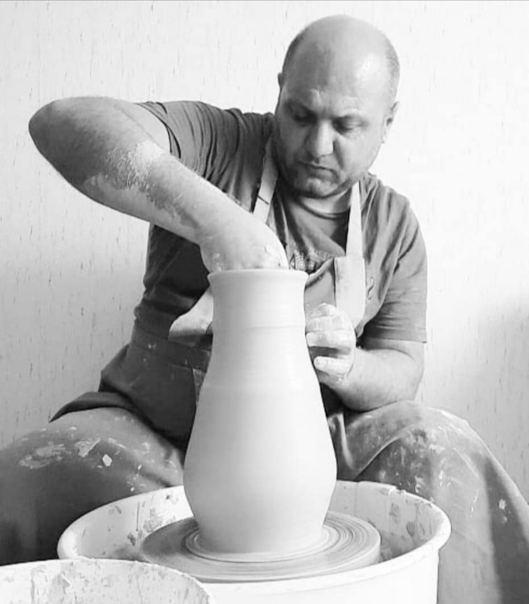
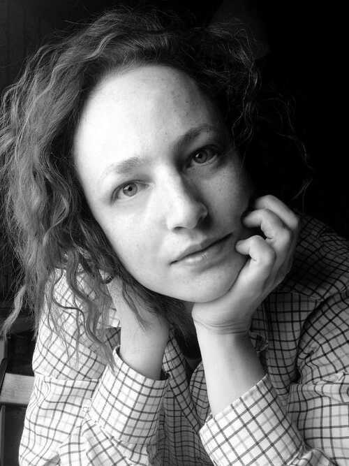
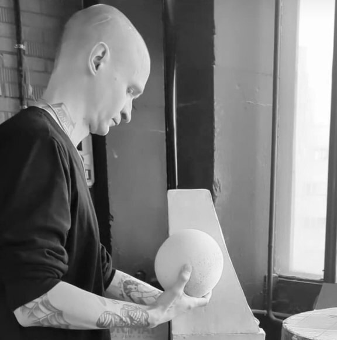
Программа фестиваля
Открытие фестиваля.
18.00 - Открытие фестиваля. Перформанс.
18.30 - Вернисаж.
11.00 - 12.00 - Семенова-Бредихина Ольга
11.00 - 12.00 - Марамыгина Анна
11.00 - 12.00 - Метсо Светлана
11.00 - 12.00 - Жарикова Ирина
11.00 - 12.00 - Надия Миниахметова
11.00 - 12.00 - Балбанян Григор
13.00 - 14.00 - Андреева Ольга
13.00 - 14.00 - Становов Константин
13.00 - 14.00 - Сафроненков Александр
13.00 - 14.00 - Черкасова Юлия
13.00 - 14.00 - Моргуновская Юлия
13.00 - 14.00 - Мастер-класс- Мария Коне
15.00 - 16.00 - Тихоновец Антон
15.00 - 16.00 - Енацкая Марина
15.00 - 16.00 - Пташко Мария
15.00 - 16.00 - Чевдарь Евген
15.00 - 16.00 - Стуков Федор и Ирина Левитина
Партнеры
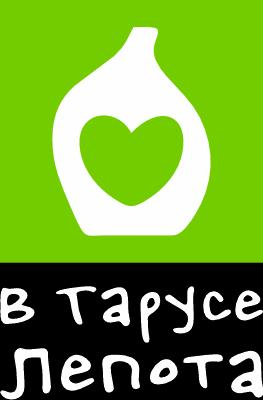
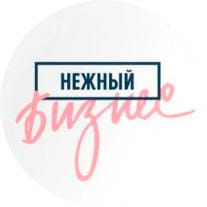
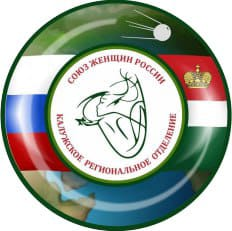
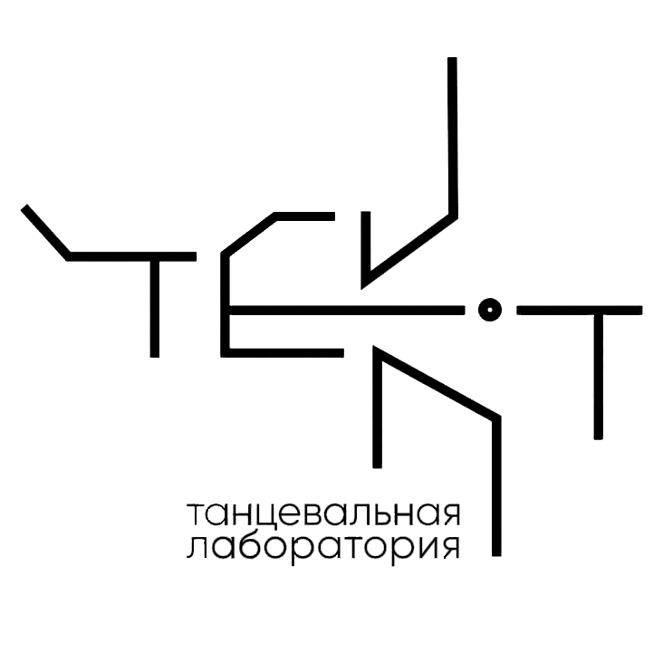
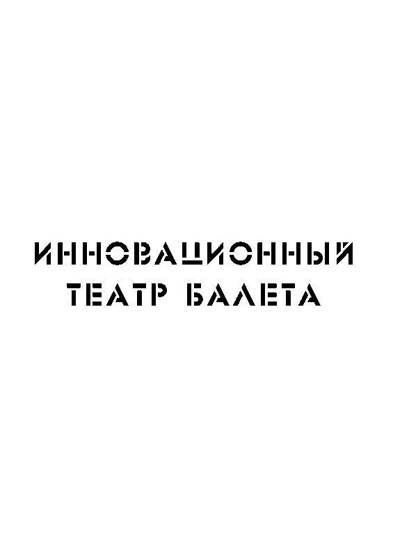
Информационные партнеры
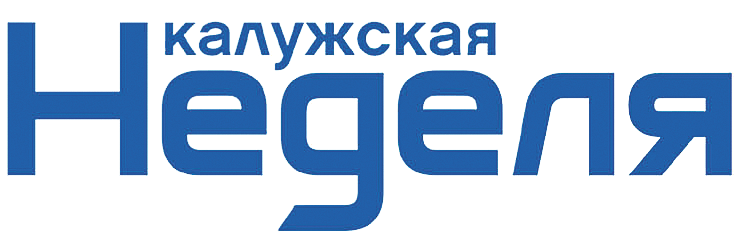
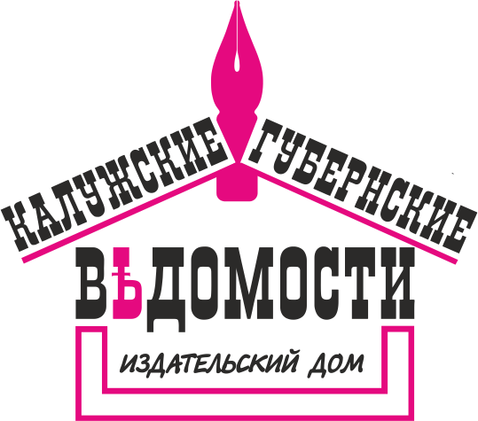

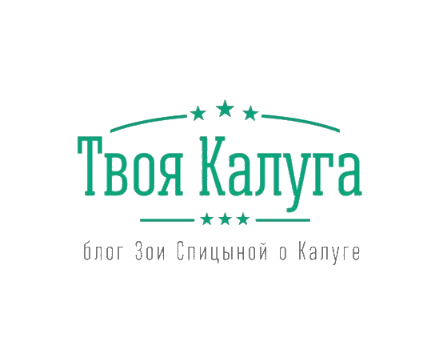